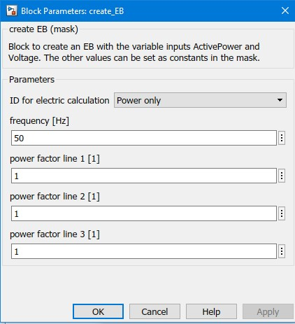

create_EB
Path: CARNOT/Source/Simple
Purpose:
Create an Electric Bus.
Description:
Apparant power and voltage are set by input ports. The other parameters
are constant and set in the block mask. The output of the block is a
constant Electric Bus signal.
Input:
| voltage | : | voltages (vector 3x1) in V |
| act_power | : | active power per line (vector 3x1) in W |
Output:
| EB | : | Electric Bus |
Parameters and Dialog Box:

Examples:
Open the example explorer from the Matlab command window
ExampleBrowser
or load the examples via the CARNOT library.
Characteristics:
| Direct Feedthrough | : | Yes |
| Sample Time | : | Inherited from driving block |
| Vectorized | : | No |